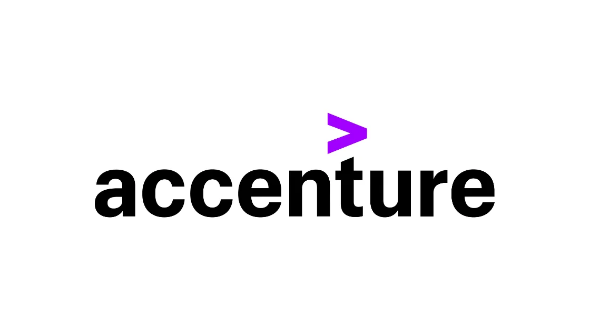

Accenture Off Campus Drive 2022 For Freshers
Accenture Off Campus Drive 2022 For Freshers | Across India | Apply Now!
Accenture has announced a job notification for the post of Associate Systems Engineer. A student from various disciplines can apply for Accenture Recruitment 2022. Interested and eligible candidates can read more details below

| Accenture Recruitment 2022 | |||
|---|---|---|---|
| 1 | Company name | Accenture | |
| 2 | Post Name | Associate Software Engineer & Application Services Associate | |
| 3 | Salary | 4.5 LPA | |
| 4 | Experience | 0-1 Year | |
| 5 | Job Location | All over India | |
| 6 | Batch | 2022/21/20/19 | |
Job Description:
Accenture is hiring candidates for the post of Associate Software Engineer & System and Application Services Associate
Job Responsibilities
▪︎ Design, build, test, assemble, support and configure application using business requirements
▪︎ Understand business drivers that will impact performance and deliver software to those expectations
▪︎ Bake technology trends into solutions; Participate in the development of automation solutions, new functionality and technologies and integrate them in existing solutions
▪︎ Responsible for incident resolution and support extended to customers through voice interaction/email/chat/remote support
Eligibility Criteria:
▪︎ All streams/branches of B.E / B.Tech / M.E / M.Tech, MCA, and M.Sc. (CSE, IT only) from 2019, 2020, 2021 and 2022 year of pass outs with full-time education only (Part-time and distance educations are not considered)
▪︎ Note: MBA /PGDBM candidates are not eligible to apply for this role
▪︎ Maximum 1-year gap in education (post 10th standard till completion of graduation / Post-graduation)
▪︎ Candidate should not have appeared for Accenture Recruitment assessment/interview process in the last three months.
▪︎ Candidate should not have more than 11 months of experience
▪︎ Candidates must be eligible to work in India either by citizenship/ have relevant work permit documents.
▪︎ Please note that Bhutan and Nepal nationals can work in India without a need for obtaining a work visa. All other foreign nationals require work visa or an Overseas Citizenship of India (OCI) or Person of Indian Origin (PIO) card to work in
India
▪︎ You are willing to work in any Business Unit/Service line within the company
▪︎ You are willing to join /relocate to any Accenture office across India
▪︎ CTC: 4.5 LPA
Preferred skill:
▪︎ Ability to anticipate and resolve business issues with agility
▪︎ Multi-disciplinary and versatile with the aptitude to learn and apply new skills faster
▪︎ Good analytical and problem-solving skills and proficient in verbal and communication skills
▪︎ Deliver code, to time and quality expectations and participate in peer reviews
▪︎ Take ownership of the successful implementation of the solution
▪︎ Support infrastructure operations and /or manage delivery for IT production system and services
▪︎ Flexibility to relocate for project deployment to any part of India and work in 24X7 shifts basis business requirement
Eligibility Criteria (System and Application Services Associate):
▪︎ All streams/branches of M.C.M, M.Sc, M.A, M.Com, M.FA, B.Sc., BCA, BBA, B.A, B.Com, B.Voc and BMS from 2019, 2020, 2021 and 2022 year of passouts with full-time education only (Part-time and distance educations are not considered)
▪︎ Note: B.E / B.Tech / M.E / M.Tech / MCA / M.Sc (CS and IT Branch) / MBA / PGDBM candidates are not eligible to apply for this role
▪︎ No active backlogs during application and/or during onboarding.
▪︎ Maximum 1-year gap in education (post 10th standard till completion of graduation)
▪︎ Candidate should not have appeared for Accenture Recruitment assessment/interview process in the last three months.
▪︎ Candidate should not have more than 11 months of experience
▪︎ Candidates must be eligible to work in India either by citizenship/ have relevant work permit documents.
▪︎ Please note that Bhutan and Nepal nationals can work in India without a need for obtaining a work visa. All other foreign nationals require work visa or an Overseas Citizenship of India (OCI) or Person of Indian Origin (PIO) card to work in
India
▪︎ As we provide service for our clients across the globe, we expect you to be flexible to work across different time zones/shifts
▪︎ You are willing to work in any Business Unit/Service line within the company
▪︎ You are willing to join /relocate to any Accenture office across India
▪︎ CTC: INR 3.5 LPA
About Accenture:
Accenture is a leading global professional services company, providing a broad range of services and solutions in strategy, consulting, digital, technology and operations. Combining unmatched experience and specialized skills across more than 40 industries and all business functions—underpinned by the world’s largest delivery network—Accenture works at the intersection of business and technology to help clients improve their performance and create sustainable value for their stakeholders. With more than 450,000 people serving clients in over 120 countries, Accenture drives innovation to improve the way the world works and lives.
How to Apply for Accenture Recruitment 2022?
▪︎ Interested and Eligible candidates can apply for this drive online by scrolling down and clicking on Apply HERE.